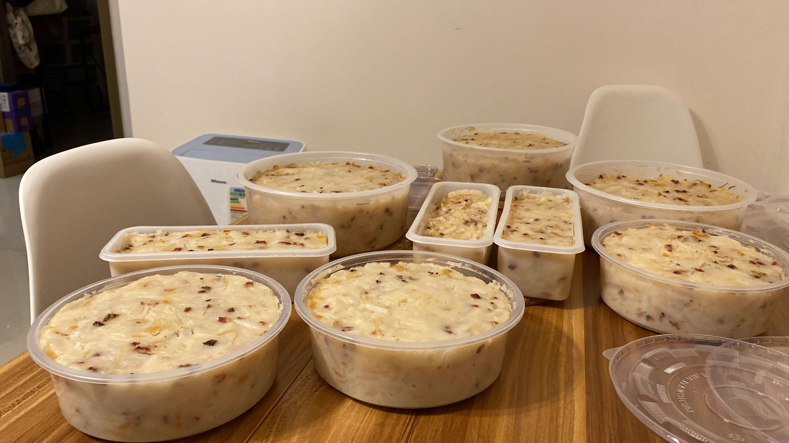

Recipe · Feb 5, 2025 · 3 min read
臘味蘿蔔糕食譜
Ellen Timothy Wong

自從媽媽不再蒸蘿蔔糕之後，我就開始擔起這個重任，研究好味的蘿蔔糕食譜。媽媽的蘿蔔糕比較清淡和多粉，而我很喜歡吃到蘿蔔肉的清甜和臘味、海味的香味。自己煮了近七年，終於調較到一個自己滿意的食譜作為記錄。
烹調步驟
- 先沖洗乾瑤柱表面上的灰塵，然後用清水浸瑤柱過表面，泡30分鐘。
- 輕輕沖洗臘腸、臘肉表面上的灰塵。然後用廚房紙完全抹乾臘腸及臘肉。
- 用玫瑰露淋上臘肉及臘腸，等待10分鐘後，用中火蒸20分鐘。
- 輕輕沖洗蝦米，然後用清水浸蝦米過表面，泡10分鐘。將浸泡過蝦米和瑤柱的水留起備用。
- 用刀背拍扁瑤柱，再撕成瑤柱絲備用。
- 為了均勻地讓臘味和海味的香味融入蘿蔔糕，記得將臘肉臘腸、蝦米儘量剁碎備用。否則，蒸出來的蘿蔔糕，肉味不會平均而且容易鬆散。
- 將紅蔥頭切碎備用。
- 將蘿蔔去皮，盡量將白色的皮去掉，只留蘿蔔肉。（所以一般 7斤的蘿蔔，去皮和頭尾之後，可能只剩 5 - 6斤。）
- 將一半蘿蔔切成1CM厚片，再分4 條切成粗條。將另一半蘿蔔刨成蘿蔔絲，留起蘿蔔水備用。刨蘿蔔出來的水，千萬要留下來備用。
- 用一個30cm或以上的大鑊，落油用中火爆香紅蔥頭碎（一定要出味），再加入臘肉、臘腸、蝦米和瑤柱炒香。見到臘肉、臘腸出油，聞到臘味的香味就熄火，𢳂起所有材料備用。（這時你應該聞到惹味的甜肉香味）
- 不用清洗原來的鑊，直接加入所有蘿蔔、之前浸泡海味用的水和冰糖。冚上鑊蓋，用中火煮腍所有蘿蔔，大約10分鐘。如果不幸買了花心蘿蔔，可能要煮久一點和留意是否需要加水煮。
- 加入所有臘味、海味、鹽和鮮姑粉，和蘿蔔一起攪勻，再煮10分鐘。見到煲出來的湯汁剛剛到所有材料的表面，就熄火。
- 舀起一小碗湯加入200毫升清水和蘿蔔水，然後開粉漿。攪勻粉漿至沒有顆粒，然後分3次倒入蘿蔔料中，最後加入適量的胡椒粉。期間要將蘿蔔料和粉漿充分攪勻。一定要先將蘿蔔湯汁加入清水和刨蘿蔔水降温，之後才加粉，否則熱湯會燙熟粘米粉，令你攪不勻粉漿。
- 由於蘿蔔湯料還是熱的，所以當加入粉醬，再不停搞混的時候，蘿蔔料會慢慢變成濃稠的糊狀。用匙羹撈起都不會輕易掉下來。
- 在模具上掃上薄油。這個份量約可分3盒 930ml 的食物盒，或者6 個600克的長條型的食物盒。
- 分盒後，在糕料面上撒上芝麻。記得將芝麻壓在糕料面上，否則在煎蘿蔔糕的時候，芝麻會掉出來。
- 然後包上可加熱的保鮮紙，或者錫紙，用牙籤在表面開數個小孔，然後放入蒸爐大火蒸一小時。
- 蒸好之後，可用筷子或者牙籤插入蘿蔔糕然後再抽出，見到沒有糕料黐在筷子上，就代表蘿蔔糕已經熟透了。
- 移除所有保鮮紙和錫紙，將蘿蔔糕放在室溫，待完全放涼之後，方可冚蓋放入雪櫃。否則，水蒸氣會令蘿蔔糕加速變壞。
這樣的蘿蔔糕，可以在雪櫃內保存兩星期。所以，如果大家想蒸蘿蔔糕送人，記得待蘿蔔糕放涼後，儘快送給人哦～
今年蒸了12底蘿蔔糕。在初七，已經吃了最後半底糕。
Tags: Radish Cake Recipe, Recipe